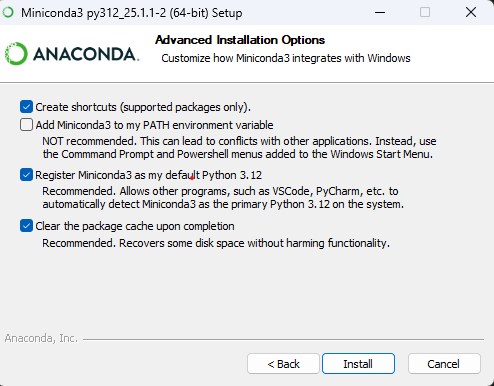
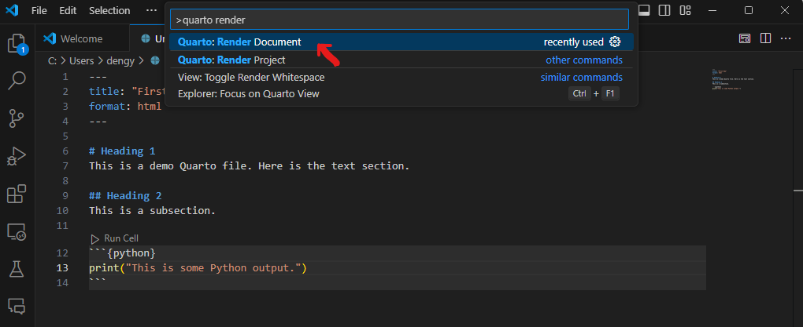
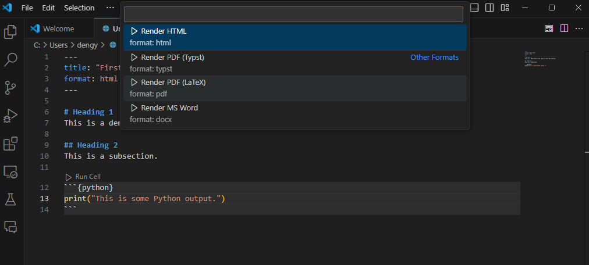

This is some Python output.Intro to Python
🔎Workshop at a Glance:
The overall goal of the is to learn how to program in Python using modern, reproducible tools.
Session 1 will help you set up a flexible, interactive, working environment for Python programming (Miniconda, VS Code IDE, Jupyter Notebook, etc.)
Session 2 and 3 will focus on the Python basics such as data structure, list comprehensive, and functions. We will also learn data frame manipulations with
pandas.Session 4 will introduce you to object-oriented programming (OOP) with examples from the statistics library
statsmodelsand machine learning libraryscikit-learn.
❗What You’ll Need for the Workshop
Bring your laptop (Windows/MacOS)
Basic GitHub knowledge & MSK GitHub Enterprise account–The workshop website is hosted on MSK Enterprise GitHub, which might require you logging in with MSK credentials to access links/download files. Check out Biostatistics Resource Guide for GitHub-related training.
Install Miniconda and Visual Studio Code before session 1 (see this guide)
ImportantWhen following the installation instructions in this article, we recommend that you install software on your MSK laptop or workstation. Downloading/installing software files on VDI is extremely slow and might not install at all if the software is too large.
📖 About this Guide
This handout is a pre-read for the Introduction to Python workshop. It serves as a follow-along guide to help you install Python, set up essential tools like Miniconda and VS Code, and prepare for coding in Python for the upcoming sessions.
Along the way, we will also discuss some important questions–What makes Python useful? Why would we, as biostatisticians, want to learn it? You will get an overview of the key features of Python, what it can do in relation to biostatistics/bioinformatics research, and how it compared to R. In the upcoming sessions, we will dive deeper into some of Python’s features and functions through hands-on programming practices.
1. Introduction to Python
What is Python?

Python is a high-level, interpreted, and general-purpose programming language first developed by Guido van Rossum in 1991.
Python has gained much popularity in the past 20 years. Its user group has expanded into a large and active scientific computing and developer community that spans numerous academic and industrial fields. Nowadays, Python has a powerful ecosystem of external packages (libraries) for data science, artificial intelligence, and software development.
Python is cross-platform and open-source. In Python, you can easily install packages with the built-in installer pip or package manager conda, just as you do with install.packages() in R.
What can Python do?
Just like R, Python is an open source and versatile programming language that allows users to perform a wide range of data analysis and computational tasks. While R is particularly useful in statistical analysis and visualizations, Python has been used in many distinct areas, such as:
Machine Learning and Deep learning
Web Development
Scripting & Automation
Cloud Computing
Game Development
Cybersecurity
Why learn Python–as Biostatisticians?
Within the field of biostatistics/ bioinformatics, Python has become a core tool for biomedical data analysis due to its versatility, reproducibility, and strong ecosystem of scientific libraries. Below are some areas where Python can be useful and some essential libraries.
Statistical analysis
While R is the go-to tool for statistical analysis, Python has caught up with many equivalent libraries and functions:
statsmodels/scipy.statsprovide regression modeling and hypothesis testing.lifelines/scikit-survivalsupport survival analysis and plotting.
ML/DL ecosystem
Python dominates in machine learning and AI development:
scikit-learnis a rich machine learning library that supports both supervised regression an dclassification (e.g., random forests, gradient boosting) and unsupervised clustering (e.g., K-means).TensorFlow,PyTorchare deep learning libraries widely used for computer vision and natural language processing.optuna,Raycan be integrated into ML/DL workflows for easy and efficient model training, hyperparameter tuning, fine-tuning, etc.
Omics data analysis
Emerging packages that provide standard omics data preprocessing and analysis pipelines allow Python to become increasingly popular in the field of bioinformatics:
scanpy,anndataare libraries for single-cell RNA-seq data loading, preprocessing, and analysis.Biopythonis a set of tools for biological computation that performs file parsering (BLAST, FASTA, GenBank, etc.), sequence analysis, clustering algorithms, etc.pysamworks with BAM/SAM/VCF files.
Python vs R: Differences
While both programming languages are popular for data analysis and computation, Python and R differ in their underlying code structure, the scope of functionality, and the extensibility of tasks they can perform. Here is a non-exhaustive summary of some key differences:
| Feature / Task | R | Python |
|---|---|---|
| Programming logic | Mostly function-oriented – structured around functions | Function- AND object-oriented – structured around classes |
| General-purpose programming | ⚠️ Less ideal – designed mainly for working with data | ✅ Strong – ML & AI, software development, scripting, etc. |
| Computational power | ✅ Vectorization allows operating on all elements of a vector at once ✅ Best for statistical analysis ⚠️ Memory-intensive; often slow for reading large data and performing large computations |
✅ Generally faster for loops ✅ Strong support for GPU computing ✅ Memory-efficient for handling large objects and complex computations |
| Package availability | ✅ Excellent for statistical analysis (glm, survival, ggplot2) ⚠️ Good options for ML (caret, mlr3) but few DL packages ✅ Great for omics-focused analysis (Bioconductor, ComplexHeatmap, Seurat) |
☑️ Improving on statistical packages (statsmodels, lifelines) ✅ Best for ML/DL (scikit-learn, pytorch, keras) ☑️ Fewer established packages specialized in omics data ✅ Great for processing large omics datasets (scanpy, scvi-tools) |
| IDE & Reproducible environments (notebooks etc.) | ✅ RStudio ✅ RMarkdown, Quarto |
✅ Visual Studio Code, JupyterLab, PyCharm, Spyder, etc. ✅ Jupyter Notebooks, Quarto |
Essential Tools for Python Programming
To get the most out of Python–especially for data science and reproducible research–it’s important to set up an integrated, flexible programming environment. Here are the core tools we will be using:
- Conda: a powerful package and environment manager for Python.
- Visual Studio Code IDE: a lightweight code editor that integrates programming + plots + terminal + etc.
- Jupyer Notebook: an interactive computing tool that combines code execution, text documentation, and visualizations.
- Git (GitHub): for version control and collaboration.
Conda (via Miniconda)
Conda is a package manager, much like CRAN + Bioconductor, and can be utilized across languages (Python, R, C/C++ etc.). It also simplifies Python environment management, similar to renv in R but more powerful and flexible, ensuring dependency isolation without cluttering the global system.
Conda can be installed via either Miniconda (lightweight version) or the Anaconda Distribution (full version). In this tutorial, we will use the former.
Visual Studio Code
Akin to RStudio, Visual Studio Code (VS Code) is an IDE for multi-language coding (Python, R, Java, etc.). It has many features integrated within it, including interactive coding via Jupyter Notebook or Quarto, version control with Git, and built-in terminal and debugging tools. We will walk through steps to set up Jupyter Notebooks in VS Code for Python later in this article.
Next, we’ll walk through how to install and configure each of these tools.
2. Python Installation and Setup
There are many ways to do install Python locally. For the purpose of the workshop, we recommend one way of installation via Miniconda that works universally across Windows and MacOS platforms.
Miniconda comes with Python, the conda package manager, and a minimal number of libraries. It is a minimal version of the Anaconda Distribution, an open-source distribution of Python designed for scientific computing, data science, machine learning, and AI development. Miniconda is relatively lightweight compared to Anaconda, which adds on top of the Miniconda distribution the Anaconda Navigator graphical user interface (GUI) and over 300 pre-downloaded libraries.

While Anaconda can be an alternative for people who do not want to use command line tools for managing packages, in this workshop, we will use Miniconda for better efficiency in the installation process.
| Feature | Anaconda | Miniconda |
|---|---|---|
| Size | ⚠️~3-4 GB (slow to download) | ✅~400 MB (lightweight) |
| What is included? | conda, Python (latest version), 300+ popular packages, Anaconda Navigator | conda, Python (latest version), essential packages only |
| User-friendly? | ✅GUI available (Anaconda Navigator) | ⚠️command-line only — conda |
▶️Follow-Along: Install Miniconda (Python + conda)
Let’s walk through steps to install Minconda. For the latest Miniconda installers for Python 3.12, go to the Anaconda website: https://www.anaconda.com/download/ and download the installer based on your system.
Note: Make sure you are downloading from the Miniconda Installers section, not Anaconda!
Navigate to the Anaconda website.
Download the 64-bit graphical installer according to your system (Windows or MacOS):
- Alternatively, check out the Quick command line installation guide to install Miniconda through command line interface.
Run the installer (
.exefor Windows/.pkgfor MacOS)select
Just Mefor installation type – recommended; doesn’t require admin rights. Installing for current user only
Installing for current user onlyYou don’t need to install for all users most of the time. This option requires admin privileges which you might not have on your MSK laptop.
Keep the default for installation location. E.g.,
- Windows:
C:\Users\<user_name>\AppData\Local\miniconda3 - MacOS:
/Users/yourname/miniconda3
- Windows:
Customize the advanced installation options:
- ❌ Add Miniconda to my PATH environment variable – NOT recommended
- ✅ Register Miniconda3 as my default Python 3.12

Do not add Miniconda to PATH⚠️It is recommended that you do not add Miniconda to system’s PATH environment variable, as it might lead to conflicts with your other Python installations or accidentally break software using the system Python.
Instead, you could later run
conda initin Anaconda Prompt to configure the terminal shells (like PowerShell or Command Prompt) to recognize thecondacommand.Complete installation. This might take a few minutes to complete.
Check installation–verify that Python and Conda are successfully installed.
Windows:
Open the Start Menu and run Anaconda Prompt.
Type the following command.
conda --version python --versionYou should see the current versions of your Python and Conda being returned–such as
conda 24.9.2andPython 3.12.4(the exact numbers might differ). This means that Miniconda is properly installed and initialized.
MacOS:
Open Terminal. Configure your shell to make the
condacommand available.source ~/miniconda3/bin/activate conda init zsh # or conda init bash if you are using bashThen restart your Terminal and type:
conda --version python --versionYou should see the current versions of your Python and Conda being returned, which means everything has been correctly installed.
Conda
Conda is a powerful command line tool for cross-platform package and environment management via the conda command line interface (CLI). Conda can be installed via installers such as Miniconda (see ▶️Follow-Along: Install Miniconda (Python + conda)) or the Anaconda Distribution.
Managing Packges
To install packages from the default Anaconda repository (also called channels), use the following commands:
conda install
# To install a specific version of a package (e.g., SciPy):
conda install scipy=0.15.0
# To install multiple packages:
conda install scipy=0.15.0 pandas matplotlibIf a package you want to install is located in another channel, such as conda-forge, you can manually specify the channel when installing the package. Take PyTorch as an example:
conda install conda-forge::pytorch
# or
conda install pytorch --channel conda-forgeIf the Python package is not available through any conda channel, consider using the pip package manager:
pip install
Difference Between
conda install and pip install
Long story short: Pip installs Python libraries only, while conda can install both Python and non-Python packages (e.g., R, C/C++, system binaries).
It is generally recommended that you only use conda install within a conda environment, as anything installed via pip won’t be recognized by conda and vice versa. Using the two interchangeably might overwrite or break packages and mess up the environment.
What if the Python package is unavailable through conda?
In these scenarios where the package you need is not built under conda, it makes sense to use pip to install packages within the conda environment. The best practice is to install everything with conda first, then use pip only if needed.
Check out this blog for more information on using pip in a conda environment.
To update a specific package:
conda update scipyNote that this automatically updates the package to the highest version supported by the current Python series. For example, Python 3.9 updates to the highest available in the 3.x series.
To remove a package (or multiple packages at once):
conda remove scipy pandas matplotlibManaging Environments
You can also use Conda to create and manage virtual environments. Here is a list of some useful commands relating to environment management. We will cover the utility of these commands in more detail in the next section.
| Task | Command |
|---|---|
| List all environments | conda env list |
| Remove an environment | conda remove --name myenv --all |
| List packages in current environment | conda list |
Export environment to .yml |
conda env export > environment.yml |
Recreate from .yml file |
conda env create -f environment.yml |
3 Virtual Environments
Environments are isolated, independent installations of a programming language and groups of dependencies that don’t interfere with each other.
For example, in the previous section, we installed Python version 3.12 via Miniconda and set it to be the system’s default–the global environment. Meanwhile, we might want to install another Python version, e.g., Python 3.8, and install dependencies under that Python version specifically. This would create a Python directory completely separate from the global environment containing the Python interpreter and the /site-packages package folder–this is called a virtual environment. You may have as many virtual environment as you want with its own Python interpreter version and set of packages.
Why Virtual Environments?
Virtual environments can help isolate individual You may find the flexibility of environments useful in many cases.
- Avoid Conflicts. Creating virtual environments can help resolve potential conflicts between different projects that might require different Python version or conflicting dependencies. Changes made to one environment won’t affect other projects that use different environments.
- Easy Management. When your work is temporary or that you simply want to experiment things without having to worry about breaking things, you can work within a virtual environment and later delete it when needed.
- Sharing Environment. You can share your Python environment and whole list of dependencies with other people through a copy of the
environment.yamlfile. - Reproducibility. They work as time capsules, allowing you to come back to an older project at any time later by recreating the virtual environment.
▶️Follow-Along: Create a Conda Virtual Environment
Once we have installed Conda via Miniconda, we can the use its conda to create virtual environments and manage dependencies.
Tip
For users comfortable with command line, this approach is generally more recommended than Anaconda Navigator, as it is faster, more robust to broken environments (reported by some who used the GUI), and offers greater flexibility and functionality for environment management.
Create the virtual environment.
conda create --name <env-name>Replace
<env-name>with the name you want to give your environment.Note: you can use
-n(shorthand) and--nameinterchangeably.You can also specify the Python version and packages you want to install to your environment.
conda create -n <env-name> python=3.10 scipy=0.17.3 pandas matplotlibOr do it in separate commands:
conda create -n <env-name> python=3.10 conda install -n <env-name> scipy pandas matplotlibYou can also specify channel other than the
defaultschannel (for multiple channels, pass the argument multiple times):conda install -n <env-name> scipy --channel conda-forge --channel biocondaNow, activate your environment.
conda activate <env-name>You can also verify that your installation was successful by looking up the list of all current environments on your computer.
conda env listThe default location for the installed conda environments (except for the base conda environment) is
..\anaconda3\envs\<env-name>Deactivate the conda environment.
Simply use
conda deactivate.Note: Avoid activating on top of another virtual environment!Be careful when activating environments. Remember to always deactivate the current environment before going into another one because environments can be stacked. This can lead to chaos in the packages in both environments. So make sure that you see
(base)at the beginning of the terminal prompt line when you are about to activate an environment.Removing an environment.
Remove by environment name:
conda env remove -n <env-name>Remove by environment folder path:
conda env remove --prefix </path/to/your/env>
Creating an Environment from an environment.yml File
We can also create a virtual environment from a .yml file.
conda env create -f environment.ymlSimilarly, after installation, activate the new environment:
conda activate <env-name>This way, we can easily recreate an environment that is shared by others or share our environment settings with others.
For example, a simple environment file that has information about the environment name, channels, and dependencies:
name: python310
channels:
- defaults
dependencies:
- python==3.10
- pandas
- numpyDownload the YML file for this Python workshop series here. This file includes the required channel and dependencies for completing the workshop sessions.
4. Integrated Development Environment
An IDE is a suite of tools integrated into a software application to make software code development easy and efficient. It typically includes a code editor, a compiler or interpreter, and a debugger that users can access through a single GUI.
Rstudio IDE
Rstudio is an IDE developed to support coding in both R and Python languages, with integrated functionalities including:Automatic syntax highlighting, code completion, and smart indentation.
- Multi-panel layout to display coding scripts, console, environment variables, and plot side-by-side.
- Support for RMarkdown and Quarto documents.
- Project management through Rprojects and renv.
For Python, there are many existing IDEs that offer compatibility and multi-functionality
| Tool | Description |
|---|---|
| VS Code | Lightweight, powerful IDE (extensible with Python & Jupyter extensions) |
| JupyterLab | Interactive notebooks for analysis & reports |
| Spyder | RStudio-like interface, good for scientific Python |
| PyCharm | Full-featured Python IDE (more for software dev) |
Visual Studio Code

Visual Studio Code (VS Code) is one of the most popular open-source code editors with many features.
- Multi-Language Programming. You can code in almost any major programming languages in VS Code including Python, R, C/C++, JavaScript, etc.
- Build-In Git Source Control. VS Code automatically recognizes and uses the computer’s Git installation to allow project version control. You can easily track changes, stage, and commit changes to your working branch.
- Variety of Project Development Support. You can add extra features such as language packs, debugging tools, Git/Github features, and remote server connector by installing extensions from the Extension Marketplace.
Go to [Work with Jupyter/Quarto in VS Code] for guide on how to get started with VS Code.
Quarto

Quarto is an open-source scientific and technical publishing system.
Think of Quarto .qmd as similar to R Markdown .Rmd files. Both combine executable code chunks with text components and figures and allow generating outputs as PDF, HTML, Docx, and even slideshow presentations.
But Quarto has more:
Compatibility with multiple IDEs. You can not only work with Quarto
.qmdin RStudio, but also VS Code, Jupyter Lab, etc.Mutli-lingual support. Unlike R Markdown which is dependent on R, Quarto does not require R. It supports embedded Python, JavaScript, and Julia executable code by simply specifying the language name in the braces on top of a code chunk (e.g.,
```{python}).Multi-engine support. Don’t worry if you are an R Markdown or Jupyter Notebook user! Qurato also works with
.Rmdand.ipynbfiles and will automatically deploy either the knitr or jupyter engine depending on the file type that you are rendering.
In summary, Quarto is easy for R users to transition into due to similarities with the R Markdown. It also includes more functionality and flexibility, making it a great tool for learning Python.
▶️ Follow-Along: Set up Jupyter Notebook in VS Code
We will now set up coding software for more elegant and interactive programming
💡Prerequisites
- Install Conda: Go to previous section [2 Installation and Setup].
- Install VS Code: Download and install VS Code
- Install Quarto: Install from the official website
Download and install VS Code
Open VS Code and install Extensions from Extension Marketplace.
Click Extensions from the left toolbar or click
Ctrl+Shift+X(orCmd+Shift+Xon Mac).Python: To support Python language, debugging, documentations, etc.
Jupyter: To support rendering Python documents from Jupyter Notebooks or Quarto files.
Create a Conda Virtual Environment. You may use the ones you created.
Essential packages/dependencies (to install, use
conda install <package-name> –channel conda-forge):- jupyter
- ipykernel
- pyyaml
Note: we recommend installing an environment from this YML file. See [Creating an Environment from an environment.yml File] for detailed instructions.
Configure the Environment in VS Code.
Open Command Palette by pressing
Ctrl+Shift+P(orCmd+Shift+Xon Mac).Type “Python: Select Interpreter”.
Choose the Conda python environment you created. If you don’t see its name pop up, choose Enter interpreter path… and manually type in the location of your conda virtual environment python executable.
E.g.,
C:\Users\<username>\AppData\Local\anaconda3\envs\<env-name>\python.exefor Windows orUsers/<username>/anaconda/envs/<env-name>/pythonfor macOS.Find your conda Python executable pathYou can search for the conda Python interpreter location on your computer. Here is an example of how to do it using command line.
For both Windows and macOS, open the Anaconda Prompt or terminal and activate the conda Python environment with
conda activate <env-name>.Then, locate your Python executable by typing the following:
Windows:
where pythonmacOS:
which python
Now you are ready to go. Let’s start with creating a new Jupyter Notebook (.ipynb).
============ Ignore Below ============
Excercise: Create a Quarto File
Go to File > New File and select Quarto Document. This will generate an empty .qmd file with the following YAML metadata. You can change the title and file output format as needed.
---
title: "First Day"
format: html
---In Quarto files, you can mix Markdown with code blocks just like in R Markdown. For example:
# Heading 1
This is a demo Quarto file. Here is the text section.
## Heading 2
This is a subsection.To add an executable code block, specify the language name inside two curly braces (e.g., {python}, {r}, etc.). For example, let’s print something:
```{python}
print("This is some Python output.")
```File Previewing
To preview the html output, click on the Quarto Preview button at the top right (or press Ctrl+Shift+K).
Alternatively, run quarto preview in your terminal to view the output.
quarto preview <yourfilename>.qmdThis is an example of the html output preview showing next to the source .qmd file.

File Rendering/ Exporting to other Formats
To save the output, use Quarto: Render Document from the command search bar (Ctrl+Shift+P).

Then select the desired output format. For example, Render HTML.

Similarly, you can use command line quarto render in the terminal to save the output.
quarto render <yourfilename>.qmdNow you should see a <yourfilename>.html file generated in your working directory.